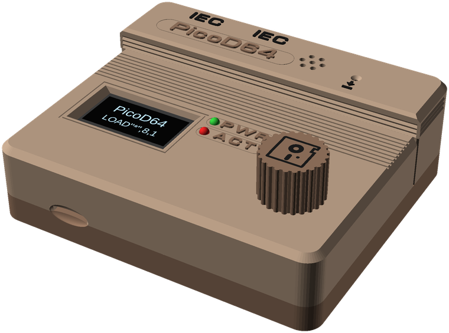
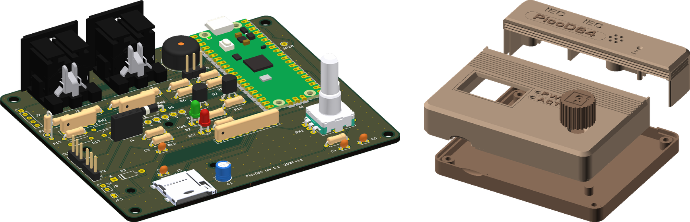
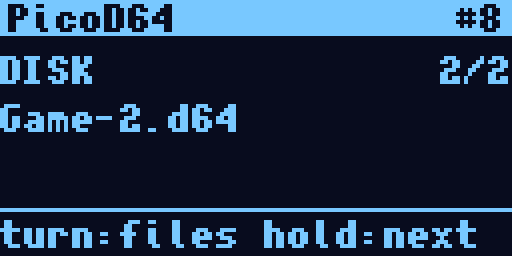

PicoD64 is a disk drive for the Commodore 64: a 1541 emulator in hardware. It plugs into the C64's disk drive socket and takes the place of a 1541. Your disks are D64 files on a microSD card.
Inside, a Raspberry Pi Pico 2 emulates the 1541 in software: its processor and chips, one clock cycle at a time, running the drive's own operating system. That is why it works with the fast loaders in demos and games that trip up simpler SD drives.

What you get
Built-in menu
Type LOAD"*",8 and RUN: a menu of your card opens on the C64. Nothing to install on the card or the C64.
Fast loading
Programs (PRG files) on the card load about 27 times faster than a normal drive (measured on the PC test setup), with one key to turn it off. Disk images load the normal 1541 way.
Copy protection
A D64 that records the original disk's read errors has them built back in, so a protection that checks for them finds them.
A knob and a display
Insert, swap and eject disks on the drive itself. Hold the knob for the next disk of a multi-disk game.
It really writes
SAVE, scratch and format go back into the disk image on the card.
Updates from the card
Copy a new picod64.uf2 to the card and switch on. PicoD64 checks it and installs it itself.
Sounds like a drive
A small speaker plays the head stepping, the knock and the motor, following what the drive is doing.
Open and free
Open hardware and free software. Build one, build ten, sell them. Change it and share your changes.
Get one
PicoD64 is a kit you build yourself. It is designed to be cheap and easy: a small board with almost every part pushed through holes and soldered underneath, a Raspberry Pi Pico 2, a small display, a knob and a 3D-printed case. If you have soldered a kit before, you can build this.

- Order the board. Send the board file, picod64-rev1.1-gerbers.zip, to a board maker such as JLCPCB, as it is: 2 layers, 1.6 mm. Signing up through this referral link costs you nothing extra and earns the project a little credit.
- Buy the parts. The parts list has a ready-made Farnell order file you can upload in one go.
- Solder it. The interactive parts map shows where each part goes and lets you tick them off. The build guide goes step by step: which part first, which way round, and the first test.
- Print the case. Every part is in picod64-case-stl.zip. Print them as they are, with no brim and no supports.
- Flash it and make the card, below.
Set it up
- Put the firmware on. Download picod64.uf2. Hold the Pico's BOOTSEL button (in the case, press the pinhole marked ⤓ with a paperclip) and plug it into your computer by USB. A drive called
RP2350appears: copy the file onto it. Done. - Get a microSD card ready. Any size, formatted FAT32 or exFAT, as most cards come. Copy your disk images (
.d64) and programs (.prg) onto it, in folders if you like. - Add the 1541 ROM. PicoD64 runs the drive's own operating system, which is Commodore's copyright, so it can't come with it. The card setup page does it for you: click Get the 1541 ROM, and it fetches it from the zimmers.net archive, checks it and saves
dos1541.binfor the top folder of the card. (Rather not use a web page? See the other ways below the steps.) - Plug it in. Put the card in, connect PicoD64 to the C64's disk drive socket with a standard drive cable, and power it from any USB supply. Switch the C64 on.
- Try it. On the C64 type:
LOAD"*",8 RUN
and the menu opens on your card.
Other ways to get the ROM: a script for Windows, Linux or macOS, or by hand
-
Windows, with a script: download the Windows script, open PowerShell in the folder you saved it to, and run (with your card's drive letter):
powershell -ExecutionPolicy Bypass -File get-roms.ps1 E:\It downloads the ROMs, joins and checks them, and writes them to the card. (
-ExecutionPolicy Bypasslets this one script run; Windows blocks downloaded scripts by default.) -
Windows, by hand: download the two halves of the 1541 ROM, 1541-c000.325302-01.bin and 1541-e000.901229-05.bin, open Command Prompt (not PowerShell: there
copyworks differently) in the folder they are in, and join them:copy /b 1541-c000.325302-01.bin + 1541-e000.901229-05.bin dos1541.binCopy
dos1541.binto the top folder of the card. -
Linux or macOS:
bash fw/tools/get-roms.sh /path/to/the/carddoes the same as the Windows script. By hand:cat 1541-c000.325302-01.bin 1541-e000.901229-05.bin > dos1541.bin. - It must be exactly 16,384 bytes, MD5
a0ce8439d1b8dcf2e1430461f7233a72: that is the ROM PicoD64 is tested with (on Windows,certutil -hashfile dos1541.bin MD5shows it). If the file is missing or the wrong size, the OLED shows Need /dos1541.bin.
Using it
There are two ways in: the menu on the C64's screen, and the knob and display on the drive. They work together.
The menu on the C64

| Key | What it does |
|---|---|
| Cursor up/down | Move |
| RETURN | Run the program, or open the folder or disk |
| Just type | Show only names with what you typed |
| DEL | Back out of a disk or folder |
| F1 | Options: run, load, run slowly; on a disk open, run its first program, or insert it |
| F3 | Fast loading on or off |
A joystick in port 2 works too. The menu remembers where you were, even after the C64 is switched off.

The knob and display



For a multi-disk game, put disk 1 in, and when it asks for the next disk, hold the knob. The display shows which disk is in, such as 2/3. The knob's Settings also make a new blank disk and set the device number (8 to 11).
Plain BASIC works as on a 1541: LOAD"$",8, LOAD"NAME",8,1, SAVE. More in the user guide.
Downloads
Click a link and the file downloads.
| What | File |
|---|---|
| Firmware | picod64.uf2 |
| The 1541 ROM, for the card | Card setup page |
| The board, for a board maker | picod64-rev1.1-gerbers.zip |
| The case, to 3D print | picod64-case-stl.zip |
| Where each part goes | Interactive parts map |
| Everything: source, parts lists, documents | The whole project (zip) |
Older versions are on the releases page.
Help
What do I need besides PicoD64?
A C64, a standard disk drive cable (6-pin DIN, as a 1541 uses), a microSD card and a USB power supply such as a phone charger.
The display says "Need /dos1541.bin"
The 1541 ROM isn't on the card, or it's the wrong file. Use the card setup page and put dos1541.bin in the top folder of the card.
A program won't load with the fast loading
Press F1 on it and choose Run slow, or turn fast loading off with F3. Some programs bring their own loader and are happier that way.
Can I keep my fast-load cartridge or JiffyDOS?
Yes. A fast-load cartridge can stay fitted. JiffyDOS works with your own JiffyDOS drive ROM on the card; that has been tested on the PC, not yet on a real C64.
Can I use it with my other drives?
Yes: it has a second socket to chain on to other drives, and its device number can be 8 to 11. Some fast loaders want to be the only drive on the cable, on a real 1541 too.
Which disk images work?
D64 images (35, 40 and 42 tracks, with or without error bytes) and PRG files. G64, D71 and D81 aren't supported yet.
How do I update the firmware?
Download picod64.uf2, copy it to the top folder of the card and switch PicoD64 on. The display shows Updating, wait, then Updated, and the file is renamed picod64.uf2.done. Don't switch off while it updates. Firmware from before this way existed (v0.1) is updated once with the Pico's BOOTSEL button, as when it was first flashed.
Can I sell them?
Yes. The hardware is under CERN-OHL-W and the code GPL-3.0: free for private and commercial use. If you change it, share your changes under the same terms.
Where can I ask for help?
On the Lemon64 forum, or by opening an issue on GitHub.
Support PicoD64
PicoD64 is a free hobby project, given to the community. If it's useful to you, a coffee on Ko-fi helps pay for new prototypes and test hardware.